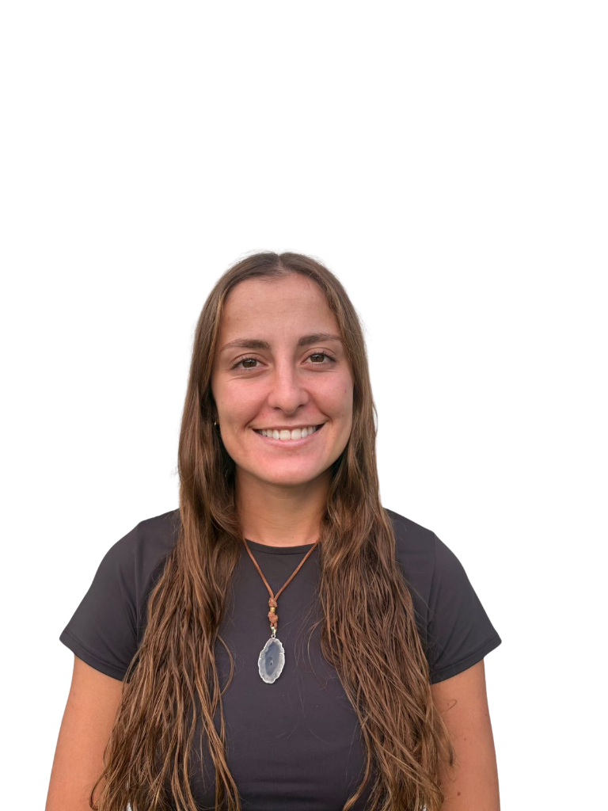

Soy futura Ingeniera en Sistemas de la UTN Córdoba con una fuerte pasión por el diseño UX/UI y el desarrollo frontend. Como CDO & Co-Founder de Synaptia, lidero el diseño de experiencias digitales, asegurando usabilidad y estética en cada producto.
También me especializo en análisis de datos con SQL y Power BI, y en la automatización de procesos con herramientas como n8n, buscando siempre optimizar flujos de trabajo.
Cada pixel cuenta en la experiencia
Siempre buscando mejorar y aprender
Colaboración como motor de innovación
De Salta a Córdoba, de Argentina a Italia
SQL, Power BI y automatización con n8n
Productos digitales en los que participé como frontend developer y diseñadora UX/UI
Software House & Transformación Digital
Nuestra startup de desarrollo de software. Transformamos negocios a través de soluciones de digitalización innovadoras y personalizadas.
Visitar sitio web →Gestión Integral de Geriátricos
Software completo para la gestión de geriátricos con módulos de residentes, responsables, stock de medicamentos, cronograma, actividades y empleados.
Desarrollado por SynaptiaPlataforma de Ideas e Inversiones
Plataforma que conecta emprendedores con inversores. Un espacio donde las ideas encuentran el capital necesario para hacerse realidad.
PróximamenteSynaptia
Lidero el diseño de experiencias digitales, enfocándome en la usabilidad y estética de cada sistema. También capacito a usuarios finales para la correcta adopción de nuestras soluciones.
NaranjaX
Participé en el programa de innovación social, donde me enfoqué en el análisis de datos con SQL y Power BI para la toma de decisiones estratégicas, y en la automatización de procesos internos utilizando n8n para optimizar flujos de trabajo del área de sustentabilidad.
Italia
Viví en Italia donde trabajé en gastronomía, aprendí el idioma y desarrollé habilidades de adaptación cultural en un entorno completamente nuevo.

Universidad Tecnológica Nacional — Córdoba
Graduación esperada: Diciembre 2026
90% completado